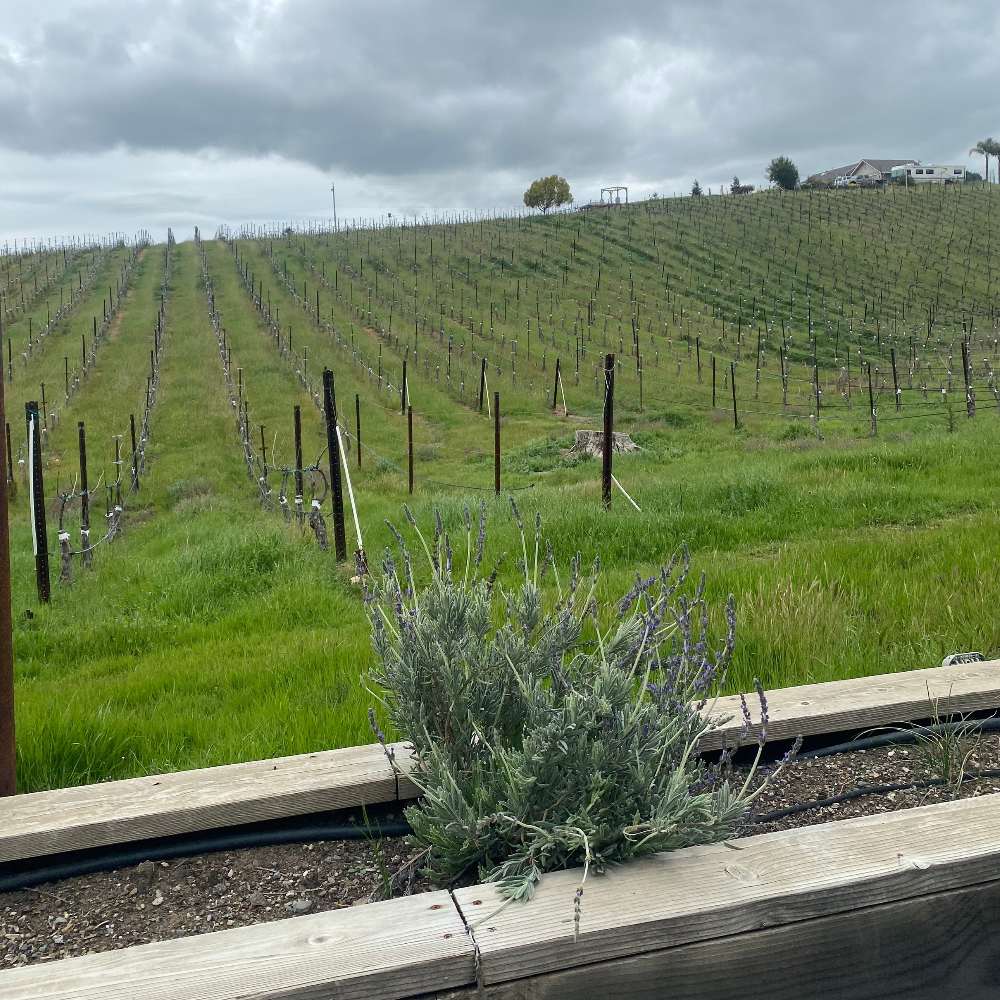
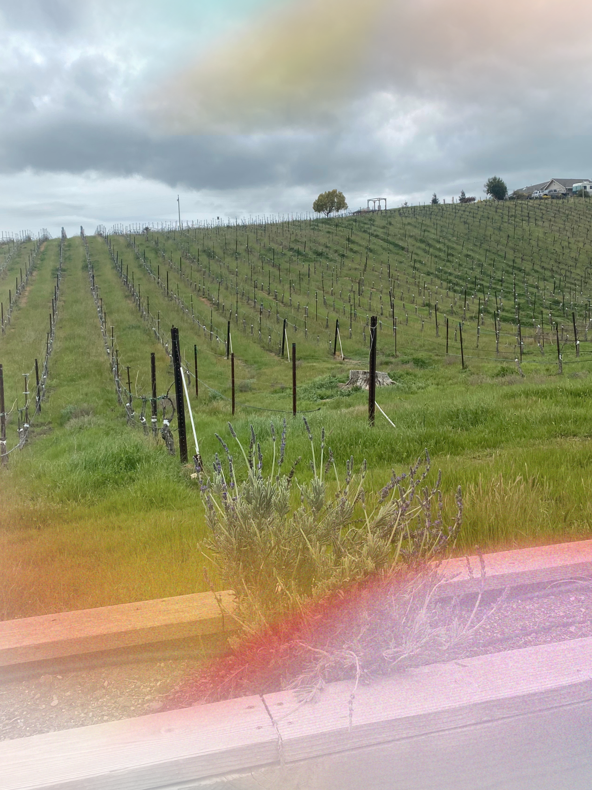
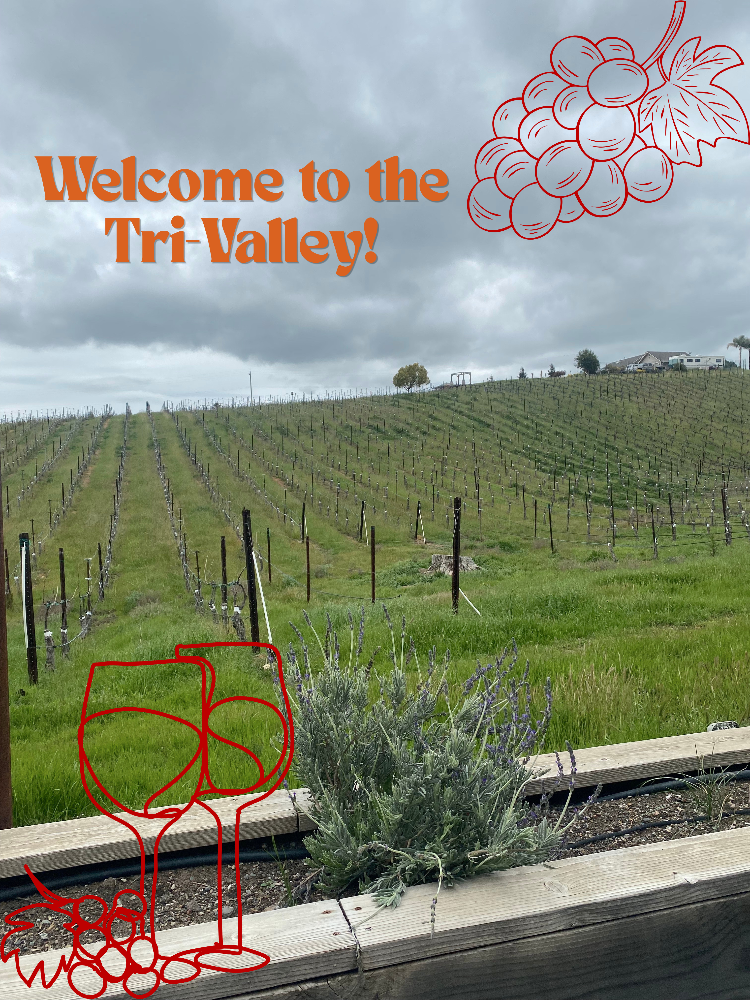
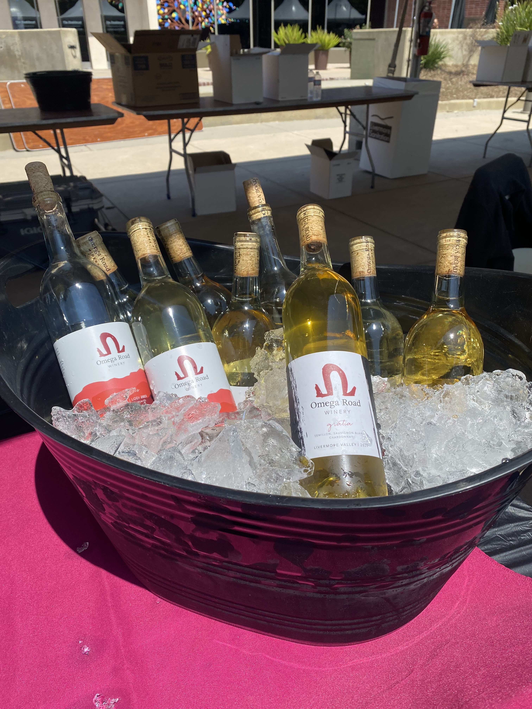
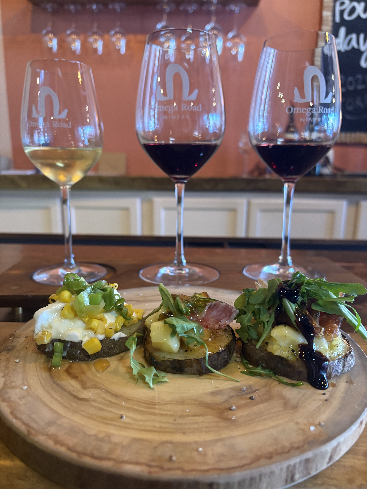

So you moved home - or maybe you landed here on purpose, drawn by a job at the Lab or one of the other industries that make the Tri-Valley tick. Either way, welcome. This may not have been the first city that came to mind when you pictured your twenties or even thirties, especially with San Francisco, San Jose, and a whole world of bigger cities sitting just beyond the hills. But here's the thing: the Tri-Valley has more going on than people give it credit for, and finding it mostly comes down to curiosity and a willingness to look. Whether you are settling in after college, saving up, or simply figuring out what comes next, this place can meet you where you are. There is a real community out here — people who are building things, trying new restaurants, exploring local wineries, and yes, also just trying to make it work. You are not alone in that. Off the 680 exists to help you find the good stuff, skip the boring weekends, and actually enjoy where you are right now. Consider this your starting point.
Sometimes you just need to get out of the house, and the Tri-Valley has plenty of spots designed for exactly that kind of low-key escape. Grounded Coffee is a local favorite — bring a board game, a book, or just borrow one of theirs and settle in for the afternoon. Story Coffee has a warm, neighborhood feel that makes it easy to spend a few hours without realizing where the time went. If you are serious about your beans, Rossetta Roasting is worth knowing about — it transforms into a bar Thursday through Saturday nights, making it a two-for-one depending on what kind of day you are having. Koffee Time is another solid option when you want something unpretentious and comfortable. Not strictly a coffee shop but absolutely worth mentioning: Towne Center Books is the kind of independent bookstore that always has a friendly face asking you what you are reading, and the Livermore Library is a genuinely great place to work or read for free. And if you are in the mood for something a little more indulgent, The Cheese Parlor is perfect — bring a book, order some wine and cheese, and call it a productive afternoon.

Do not let anyone tell you the food scene out here is lacking, because they are wrong. The Tri-Valley is a genuine melting pot, and that diversity shows up on the plate in the best way. Wingen is a must — a bakery and restaurant serving beautiful pizza, bread, and pastries, open for both breakfast and dinner with a cafe vibe that works for any mood. Brava brings empanadas done right, the kind of spot that becomes a regular order rotation once you try it. For a proper sit-down Italian dinner, Locanda in Livermore delivers on atmosphere with amazing outdoor seating and the kind of food that makes you linger. If you want a full experience rather than just a meal, Simply Fondue is interactive, fun, and comes with great martinis — ideal for a group or a date night. Range Life is where you go when you want thoughtful, high-quality cooking with ingredients that actually taste like something. And Hops and Sessions rounds out the list as a great spot where solid food meets a relaxed beer-forward environment. There is genuinely something here for every occasion and every budget.
| Name | Location | Type | Website | Notes |
|---|---|---|---|---|
| Wingen Bakery & Restaurant | Livermore | Bakery-café & Restaurant | wingenbakery.com | Breakfast, lunch & dinner in one cozy cafe-vibe space. |
| Locanda Wine Bar | Italian | locandarestaurants.com | Amazing outdoor seating — the kind of place that makes you linger. | |
| Simply Fondue | Interactive Fondue Dining | simplyfonduelivermore.com | Interactive, fun, and the martinis are no joke. | |
| Range Life | California / New American | rangelifelivermore.com | Thoughtful cooking, ingredients that actually taste like something. | |
| Hops and Sessions | Gastropub / Self-Pour Taproom | hops-sessions.square.site | Solid food meets a relaxed, beer-forward vibe. | |
| Brava Garden Eatery | Pleasanton | Argentinian-Italian Fusion | bravagardeneatery.com | Empanadas so good they become a regular order rotation. |
| Market Tavern | Dublin | New American Gastropub | markettaverndub.com | Scratch-made comfort food, relaxed but upscale. |
| Restaurant details compiled from Visit Tri-Valley and each restaurant's official website. | ||||
The Tri-Valley bar scene is more alive than its reputation suggests, and once you know where to look you will stop missing the city as much — or at least have better excuses to stay local. Many of the restaurants mentioned above double as great bar destinations, so do not overlook them when you are looking for a drink. For something completely its own thing, Stampede offers line dancing Wednesday-Sunday, which sounds intimidating until you go and realize it is just a really good time. Black Cat is the spot for craft cocktails and elevated bar bites, the kind of place that feels a little more considered. Tap 25 is your destination when the agenda is simply beers — a solid rotating tap list in a no-fuss setting. Sunshine Saloon is a classic dive bar in the best sense, unpretentious and reliable. And Fat Pigeon keeps things interesting with rotating themes that mean no two visits feel quite the same. The scene is not endless, but it is real, and finding your regular spots makes all the difference.

If there is one thing the Tri-Valley genuinely has over almost everywhere else, it is the wine. The Livermore Wine Valley is one of California’s oldest wine regions, producing bottles that rival Napa at half the price — a fact that remains criminally underappreciated. Even if wine is not really your thing yet, the wineries out here are destinations in their own right, with beautiful properties, great events, and a welcoming atmosphere that makes learning feel effortless. A great way to explore is the Livermore Wine Passport, which gets you free tastings at around thirty wineries for one upfront cost — an excellent investment for a curious newcomer. McGrail is a larger winery with a lively events calendar, from yoga and bubbles mornings to bingo nights, so there is almost always something happening. Omega Road Winery is a smaller, family-run operation with a real community feel — people will recognize you there after a visit or two — and their events like the Unfiltered seminar series, monthly dinners, and silent book club make it worth becoming a regular. While you are there, try the New Vintage Wine Spritzers, a sparkling wine with fruit juice that is exactly as good as it sounds. JMC Cellars brings unique programming like falconry experiences and drag shows alongside stunning views, and Wente, one of the oldest wineries in Livermore, is a splurge worth making for a special occasion on a gorgeous property. Beer person? Altamont Beer Works is well-known for good reason and a perfect alternative if wine is not your lane.

This featured winery pours top-notch wines- but it's the community that keeps people coming back

With pours like Torrontés, Mencía, and Mourvèdre, there's always something to surprise and delight you.
This winery embraces a food-forward philosophy, partnering with local chefs for paired bites, snacks, and full dinners.
The Tri-Valley has a calendar full of things to do year-round, and most people miss them simply because they are not paying attention. There is always something happening at the winery level alone — between McGrail, Omega Road, JMC, and the rest of the Livermore Valley wineries, you could fill your weekends just with their programming. Beyond wine country, the Bankhead Theatre in Livermore hosts performances throughout the year, from music to theater, and Almost Famous Wine Bar regularly brings in live music that punches well above what you would expect from a local spot. The broader calendar includes beloved community events like the Pleasanton Car Show, the Livermore Rodeo, and the Dublin St. Patrick’s Day Parade — the kind of things that feel very local and end up being genuinely fun. The key to not missing out is knowing where to look, and the answer is mostly Instagram. Following the accounts of places you like — wineries, bars, venues, and local event pages — is the single most effective way to stay in the loop. The Tri-Valley has its own event listings and local community groups worth joining as well. A little sleuthing goes a long way, and once you are dialed in, you will find there is almost always something worth showing up for.
Some good places to start looking for events:
At the end of the day, the Tri-Valley has far more to offer than it gets credit for, and most of it is just waiting for someone curious enough to find it. Between the coffee shops, the restaurants, the bars, the wineries, and the steady stream of local events, there is genuinely no excuse to spend another weekend doing nothing. The people who end up loving it here are the ones who treat it less like a layover and more like an actual place to build a life, even if it is temporary. Every neighborhood has its own rhythm, and once you find the spots that feel like yours, the whole area starts to open up in a way it never does from the outside. This is not about settling for less than the city — it is about realizing how much is already right here. So get out, try the place you have been putting off, strike up a conversation at the bar, sign up for the winery event that sounded a little out of your comfort zone. The Tri-Valley rewards people who show up, and showing up is the easiest first step you can take. Off the 680 is just the start — the rest is up to you to go find.
Tell us a little about yourself! Consider this our welcome to the community.